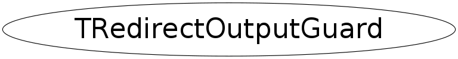

class TRedirectOutputGuard
TRedirectOutputGuard This class provides output redirection to a file in a guaranteed exception safe way. Use like this: { TRedirectOutputGuard guard(filelog, mode); ... // do something } when guard goes out of scope output is automatically redirected to the standard units in the TRedirectOutputGuard destructor. The exception mechanism takes care of calling the dtors of local objects so it is exception safe. The 'mode' options follow the fopen write modes convention; default is "a".
Function Members (Methods)
public:
| TRedirectOutputGuard(const TRedirectOutputGuard&) | |
| TRedirectOutputGuard(const char* fout, const char* mode = "a") | |
| virtual | ~TRedirectOutputGuard() |
| static TClass* | Class() |
| virtual TClass* | IsA() const |
| TRedirectOutputGuard& | operator=(const TRedirectOutputGuard&) |
| virtual void | ShowMembers(TMemberInspector& insp) |
| virtual void | Streamer(TBuffer& b) |
| void | StreamerNVirtual(TBuffer& b) |
Class Charts
{kind=link}
{kind=link}
{kind=link}
{kind=link}

Function documentation
TRedirectOutputGuard(const char* fout, const char* mode = "a")
{ gSystem->RedirectOutput(fout, mode); }